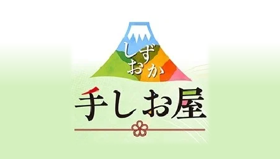
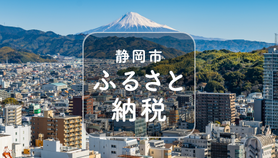

美味しさの秘密

ひとつになったのは茶葉だけではありません。開発に携わった全ての人の想いも、このお茶にはブレンドされています。茶葉の選定や抽出方法へのこだわりだけでなく、味に直接関係のないボトル缶のデザインや色味などへのこだわりも、きっと美味しさにつながっているはずです。
1茶葉へのこだわり
蒸す、揉む、整える。
収穫された茶葉は製茶工場に持ち込まれ、
青臭さを取り、揉みやすくするために、
まずは「蒸す」工程に入ります。
その後、水分を取り除いて
葉の形を整えるための「揉む」工程へ。
こうして作られた「荒茶」は、
味と香りを「整える」ために選別した
葉や茎などとブレンドされ「仕上茶」となります。
各産地のJAで仕上げられたお茶の特長を
最大限に引き出しながら、
丁寧にブレンドしたお茶が「揉一ひとえ」です。
その味わいをじっくりとお楽しみください。
2抽出方法のこだわり
独特の美味しさは、
低温でじっくりと抽出。
茶葉、抽出温度、抽出時間などの組み合わせで
20種類以上を試作。
従来品※に比べ、
低温で抽出時間を長くすることで、
静岡茶の持つ「旨み」「甘み」を引き出しつつ、
「渋み」を抑えた味わいに仕上げました。
また、煎茶抹を加えることで
スッキリとした味わいの中にも、
お茶本来の風味をしっかりと残しました。
ボトル缶のキャップを広口にすることで、
キャップを開けた瞬間から
「こだわりの香り」もお楽しみいただけます。
※静岡茶ゆったり290ｇ
3ボトル缶へのこだわり
デザインのモチーフは
「十二単」から。
平安時代に成立したとされる公家女房の
正装である「十二単（じゅうにひとえ）」。
「揉一ひとえ」の名前の由来となった
「十二単」をデザインモチーフとし、
茶畑をイメージした鮮やかなグラデーションと、
「静岡」を象徴する富士山のシルエットを配し、
「上質」と「静岡らしさ」を表現しました。
また、印刷難易度の高い部分にも試行錯誤を重ね、
納得のいく色味を実現しました。
品質にも環境にも配慮。
リサイクル性に優れたアルミ缶を使用し、
循環型社会に配慮しています。
アルミ缶は遮光性・酸素不透過性にも優れ、
お茶が持つ「味」「香り」「色」の
保存性に適しています。
また熱伝導率も高く、
冷蔵庫などでの冷却にも適しています。
コールドでもホットでも、
おいしくお飲みいただけます。
SHOP
-

静岡県内の
JA・ファーマーズマーケット -
 インターネット販売
JAタウン しずおか『手しお屋』 -
 -